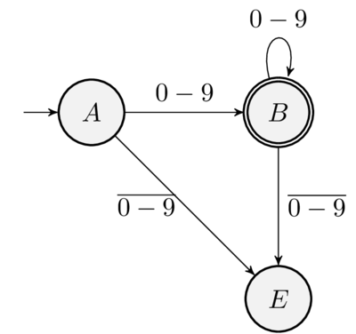
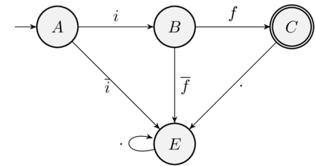

String -> [Token]
data Token = Id String | Number Int | LPAREN | RPAREN | PLUS | TIMES | MINUS | DIV | AND | NOT | ASSIGN | SEMI | LT | EQ ...
data Result = Begin | Error String | Success [Token] lexer :: String -> Result lexer = foldr step Begin . concatMap words . lines
step :: String -> Result -> Result step _ (Error s) = Error s step s Begin = case s of "if" -> Success [IF] "then" -> Success [THEN] ...
lines e words dividem strings em linhas e palavras.data DFA a = DFA { start :: a , delta :: a -> Char -> a , finals :: [a] }
deltaStar :: DFA a -> String -> a deltaStar m = foldl (delta m) (start m)
foldl :: (b -> a -> b) -> b -> [a] -> b foldl _ v [] = v foldl f v (x : xs) = foldl (f v x) xs

numberDFA :: DFA (Maybe Bool) numberDFA = DFA { start = Just False , delta = numberTrans , finals = [Just True] } where numberTrans Nothing _ = Nothing numberTrans (Just False) c | isDigit c = Just True | otherwise = Nothing numberTrans (Just True) c | isDigit c = Just True | otherwise = Nothing

ifDFA :: DFA (Maybe Int) ifDFA = DFA { start = Just 0 , delta = ifTrans , finals = [Just 2] } where ifTrans (Just 0) 'i' = Just 1 ifTrans (Just 1) 'f' = Just 2 ifTrans _ _ = Nothing
longest :: DFA a -> String -> Maybe String longest m = combine . foldl step (Just "", Nothing, start m)
step.step (Just pre, Nothing, e) c | finals m (delta m e c) = ( Just (c : pre) , Just (c : pre) , delta m e c) | otherwise = ( Just (c : pre) , Nothing , delta m e c)
stepstep (Just pre, Just pre', e) c | finals m (delta m e c) = ( Just (c : pre) , Just (c : pre') , delta m e c) | otherwise = ( Nothing , Just pre' , delta m e c)
stepstep (Nothing, val, e) c = ( Nothing , val , delta m e c) combine (_, val, _) = reverse <$> val
dfaProduct :: (Eq a, Eq b) => DFA a -> DFA b -> ((a,b) -> Bool) -> DFA (a, b) dfaProduct m1 m2 fin = DFA { start = (start m1, start m2) , delta = delta' , finals = fin } where delta' (e1,e2) c = (delta m1 e1 c, delta m2 e2 c)
unionDFA :: (Eq a, Eq b) => DFA a -> DFA b -> DFA (a,b) unionDFA m1 m2 = dfaProduct m1 m2 g where g (e1, e2) = finals m1 e1 || finals m2 e2
ifOrIdentDFA :: DFA (Maybe Int, Maybe Int) ifOrIdentDFA = unionDFA ifDFA identDFA